Mit Hilfe der Liquiditätsanalyse kann die zukünftige Liquidität des Unternehmens analysiert werden, wobei das Fenster über den Menüpunkt…
1 WinLine INFO
1 Info
1 Liquiditätsanalyse
… aufgerufen wird.
Hinweis
Die Analyse selber kann über 2 Wege vorgenommen werden:
ü BI-Ausgabe
Die Analyse erfolgt
über "Ausgabe Bildschirm", "Ausgabe Drucker", "Power Report", "Cube erzeugen",
"Excel Pivot" oder "Ausgabe XLSX", wobei die Funktion der Datenquellen zur
Verfügung steht. Des Weiteren stehen Detailinformationen zur Verfügung, d.h. die
zugrundeliegenden Belege und Offene Posten können detailliert analysiert
werden.
ü Ausgabe der
Liquiditätsplandatei
Die Analyse erfolgt nach Anwahl der Buttons
"Aufbereitung Liquiditätsplandatei" und "Ausgabe Liquiditätsplandatei" über eine
Excel-Datei, in welcher die Liquiditätsdaten (optisch aufbereitet) dargestellt
werden. Die Darstellung erfolgt hierbei verdichtet, d.h. es werden keine
Informationen über einzelne Belege oder offene Posten ausgegeben.
Hinweis
Die Excel-Datei (im Standard "LA.xlsm", "LA_KoV.xlsm" oder "LA_KmV.xlsm" - siehe Feld "Speicherort") bezieht sich hierbei immer auf die Rohdatendatei "LA2.xlsx", welche im Zuge der Ausgabe der Liquiditätsplandatei automatisch gebildet wird.
Sollte keine Lizenz für die Liquiditätsanalyse vorhanden oder der aktuelle Benutzer ein Demobenutzer sein, so werden in der Liquiditätsanalyse immer nur die aktuelle KW und die kumulierten Werte der Vorperioden (aktuelle KW -1) angezeigt.
Achtung
Beim Öffnen des Fensters wird bereits geprüft, ob ggfs. Filter im Aufbau der Liquiditätsanalyse vorhanden sind, auf welche man kein Zugriffsrecht besitzt. Ist dieses der Fall, so wird man darauf hingewiesen und die Filter werden farblich markiert (siehe Feld / Spalte "Filter" und Eingabefeld "Zahlungsmittelfilter").
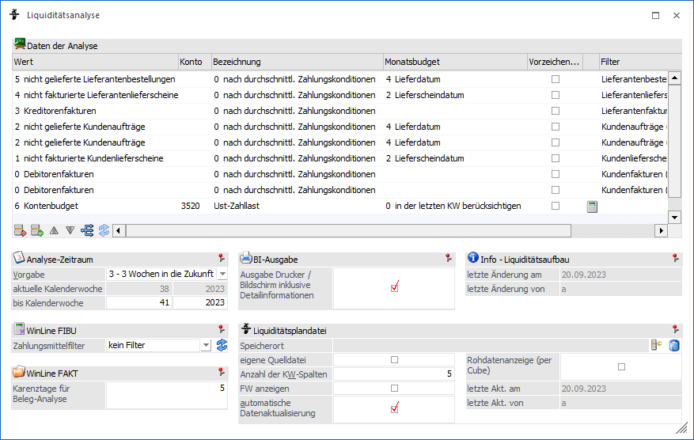
Tabelle "Daten der Analyse"
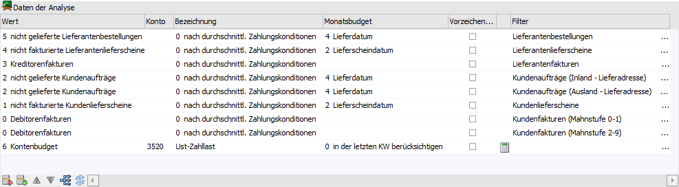
Im ersten Schritt erfolgt die Definition, welche Werte in die Liquiditätsanalyse einbezogen werden sollen. Hierzu können in der Tabelle folgende Einstellungen vorgenommen werden:
Ø Wert
In dieser Spalte wird ausgewählt, welche Art von Daten zur Berechnung herangezogen werden sollen. Dabei stehen folgende Optionen zur Auswahl:
ü 0 - Debitorenfakturen
Damit
können alle nicht ausgeglichenen Rechnungen ausgewertet werden, die als Offene
Posten in der WinLine FIBU vorhanden sind. Rechnungen, die in der WinLine FAKT
gerechnet oder gedruckt wurden und noch "ungebucht" in einem Stapel vorhanden
sind, werden nicht berücksichtigt! D.h. vor einer Liquiditätsanalyse sollten
alle vorhandenen Stapel übernommen werden.
ü 1 - nicht fakturierte
Kundenlieferscheine
Hier werden alle Kundenlieferscheine, welche noch nicht
fakturiert wurden, ausgewertet (Belegtabelle), wobei die Werte inklusive Steuer
ausgewiesen werden. Mit welchem Datum die Lieferscheine in der Analyse
berücksichtigt werden sollen (Lieferscheindatum oder Valutadatum), kann in der
Spalte "Datum / Lieferdatum / Monatsbudget" definiert werden.
ü 2 - nicht gelieferte
Kundenaufträge
Hier werden alle Aufträge ausgewertet, für jene noch keine
Lieferung erfolgt ist (ausgenommen Belegzeilen des Typs "6 - Gutschrift"), wobei
die Werte inklusive Steuer ausgewiesen werden. Mit welchem Datum die Aufträge in
der Analyse berücksichtigt werden sollen (Lieferdatum oder 2. Lieferdatum; die
Bezeichnungen entsprechen der WinLine FAKT-Einstellung), kann in der Spalte
"Datum / Lieferdatum / Monatsbudget" definiert werden.
ü 3 - Kreditorenfakturen
Damit
können alle nicht ausgeglichenen Eingangs-Rechnungen ausgewertet werden, die als
Offene Posten in der WinLine FIBU vorhanden sind. Rechnungen, die in der WinLine
FAKT gerechnet oder gedruckt wurden und noch "ungebucht" in einem Stapel
vorhanden sind, werden nicht berücksichtigt. D.h. vor einer Liquiditätsanalyse
sollten alle vorhandenen Stapel übernommen werden.
ü 4 - nicht fakturierte
Lieferantenlieferscheine
Hier werden alle Lieferantenlieferscheine, welche
noch nicht fakturiert wurden, ausgewertet (Belegtabelle), wobei die Werte
inklusive Steuer ausgewiesen werden. Mit welchem Datum die Lieferscheine in der
Analyse berücksichtigt werden sollen (Lieferscheindatum oder Valutadatum), kann
in der Spalte "Datum / Lieferdatum / Monatsbudget" definiert werden.
ü 5 - nicht gelieferte
Lieferantenbestellungen
Hier werden alle Bestellungen ausgewertet, für jene
noch kein Wareneingang erfolgt ist (ausgenommen Belegzeilen des Typs "6 -
Gutschrift"), wobei die Werte inklusive Steuer ausgewiesen werden. Mit welchem
Datum die Aufträge in der Analyse berücksichtigt werden sollen (Lieferdatum oder
2. Lieferdatum; die Bezeichnungen entsprechen der WinLine FAKT-Einstellung),
kann in der Spalte "Datum / Lieferdatum / Monatsbudget" definiert werden.
ü 6 - Kontenbudget
Mit dieser
Einstellung lässt sich der Budgetwert von einem Konto (Sach- oder Personenkonto)
ermitteln, wobei hier immer das Budget 1 zur Berechnung verwendet wird.
ü 7 - BKZ-Budget
Damit kann der
Budgetwert einer BKZ mit berücksichtigt werden, wobei hier immer das Budget 1
zur Berechnung verwendet wird.
ü 8 - BWA-Budget
Damit kann der
Budgetwert einer BWA-Kennzahl mit berücksichtigt werden, wobei hier immer das
Budget 1 zur Berechnung verwendet wird.
Ø Konto / BKZ / BWA
An dieser Stelle muss, für die Analyse eines Budget-Werts (Wert-Typ "6 - Kontenbudget", "7 - BKZ-Budget" oder "8 - BWA-Budget"), der jeweilige Stammdatensatz (Sachkonto, Personenkonto, BKZ, BWA) hinterlegt werden.
Ø Bewertung / Bezeichnung
Handelt es sich um einen Debitoren- oder Kreditoren-Wert ("0 - Debitorenfakturen", "1 - nicht fakturierte Kundenlieferscheine", "2 - nicht gelieferte Kundenaufträge", "3 - Kreditorenfakturen", "4 - nicht fakturierte Lieferantenlieferscheine" oder "5 - nicht gelieferte Lieferantenbestellungen"), so kann an dieser Stelle definiert werden, wie die Zahlungskonditionen in die Berechnung einfließen sollen. Folgende Varianten der Bewertung stehen hierbei zur Verfügung:
ü 0 - nach durchschnittl.
Zahlungskondition
Bei dieser Art der Bewertung werden die durchschnittlichen
Tage bis zur Zahlung und der durchschnittliche Skonto-Prozentsatz aus dem
jeweiligen Personenkonto (Register "FIBU") zur Berechnung verwendet.
ü 1 - ohne
Skontoberücksichtigung
Bei dieser Art der Bewertung werden die Nettotage des
Offenen Postens / des Beleges zur Berechnung verwendet.
ü 2 - mit optimierter
Skontoberücksichtigung
Bei dieser Art der Bewertung werden die Skontotage1
des Offenen Postens / des Beleges zur Berechnung verwendet.
Sollte es sich in der Zeile hingegen um einen Budget-Wert handeln, so wird hier die Bezeichnung des Stammdatensatzes (Kontoname, Personenkontoname, Bezeichnung der BKZ, Bezeichnung der BWA) angezeigt.
Ø Belegoption
Handelt es sich um einen Debitoren- oder Kreditoren-Wert auf Grundlage einer Faktura ("0 - Debitorenfakturen" oder "3 - Kreditorenfakturen") und wird meiner einer "2 - mit optimierter Skontoberücksichtigung" gearbeitet, so kann an dieser Stelle definiert werden, wie mit Fakturen aus der Vergangenheit verfahren werden soll.
ü 6 - für alle Belege
Die
Skontoberücksichtigung erfolgt bei allen Belegen.
ü 7 - nur für aktuelle Belege
Es
wird bei Belegen aus der Vergangenheit kein Skonto berechnet. Die Darstellung
solcher Belege erfolgt in der Kalenderwoche der Nettotage.
Ø Datum / Lieferdatum / Monatsbudget
Wenn es sich um einen Debitoren- oder Kreditoren-Wert auf Grundlage eines Belegs handelt ("1 - nicht fakturierte Kundenlieferscheine", "2 - nicht gelieferte Kundenaufträge", "4 - nicht fakturierte Lieferantenlieferscheine" oder "5 - nicht gelieferte Lieferantenbestellungen"), so kann an dieser Stelle definiert werden, mit welchem Datum der Beleg in der Analyse berücksichtigt werden soll.
Hinweis
Die Bezeichnungen der beiden Datümer wird dabei aus den Belegoptionen verwendet.
Handelt es sich um eine Budget-Wert-Zeile ("6 - Kontenbudget", "- 7 BKZ-Budget" oder "8 - BWA-Budget"), so wird hier definiert, wie das Budget aus dem Stammsatz aufgeteilt werden soll. Folgende Varianten stehen hierfür zur Verfügung:
ü 0 - in der letzten KW
berücksichtigen
Mit dieser Einstellung wird das jeweilige Budget immer in der
letzten Kalenderwoche des entsprechenden Monats berücksichtigt.
ü 1 - aliquot auf die KWs
aufteilen
Mit dieser Einstellung wird das jeweilige Budget gleichmäßig auf
die Kalenderwochen des entsprechenden Monats aufgeteilt.
Ø Vorzeichenwechsel
Durch Aktivierung der Option "Vorzeichenwechsel" werden alle Werte der Zeile in das Gegenteil umgekehrt. Dieses macht vor allem dann Sinn, wenn es sich um Kreditoren-Werte handelt, da diese abgezogen werden müssen.
Ø Zusatzbudget
Wurde bei einem Budget-Wert ("6 - Kontenbudget", "7 - BKZ-Budget oder "8 - BWA-Budget") ein Zusatzbudget hinterlegt (siehe Tabellenbutton "Zusatzbudget"), wird hier ein Taschenrechnersymbol angezeigt. Durch einen Doppelklick auf das Symbol kann das Zusatzbudget aufgerufen werden.
Ø Filter
Mit Hilfe von Filtern, welche an dieser Stelle ausgewählt / erstellt / bearbeitet werden können (siehe auch Button "Filter bearbeiten"), kann das Analyseergebnis der Zeile nach frei definierbaren Kriterien eingeschränkt werden.
Hinweis
Die zur Auswahl stehen Filter sind abhängig vom Typ der Zeile (siehe auch Button "Filter bearbeiten") und den jeweiligen Objektberechtigungen (es muss zumindest das Objektrecht "lesen" zur Verfügung stehen).
Achtung
Wenn im Aufbau der Liquiditätsanalyse Filter vorhanden sind, auf welche man kein Zugriffsrecht besitzt, so werden diese farblich gekennzeichnet. Solche Filter werden bei der Berechnung nicht berücksichtigt!
Tabellenbuttons
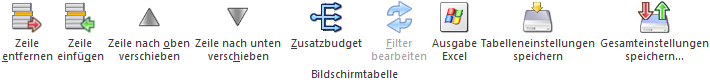
Ø Zeile entfernen
Durch Anklicken des Buttons "Zeile entfernen" können bereits erfasste Zeilen im Liquiditätsaufbau gelöscht werden.
Ø Zeile einfügen
Durch Anklicken des Buttons "Zeile einfügen" können neue Zeilen in den Liquiditätsaufbau eingefügt werden.
Ø Zeile nach oben verschieben / Zeile nach unten verschieben
Mit Hilfe dieser beiden Buttons kann die Reihenfolge der Einträge innerhalb der Tabelle verändert werden.
Ø Zusatzbudget
Dieser Button steht nur dann zur Verfügung, wenn in der Tabelle ein Typ mit Budget ("6 - Kontenbudget", "7 - BKZ-Budget" oder "8 - BWA-Budget") erfasst wurde. Dadurch wird eine zweite Tabelle geöffnet, in der ein zusätzliches Budget erfasst werden kann. Dieses Zusatzbudget wird - sofern vorhanden - additiv zu bereits bestehenden Budgets berechnet.
Hinweis
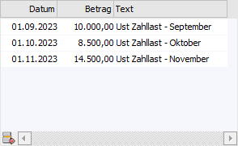
In der Tabelle können folgende Daten hinterlegt werden
ü Datum
In dieser Spalte kann das
Datum eingegeben werden, an dem der Wert mitberücksichtigt werden soll.
ü Betrag
Eingabe des Betrags, der
bei der Berechnung berücksichtigt werden soll.
ü Text
Hier kann noch eine
Bemerkung zum Budget eingegeben werden. Dieser dient allerdings nur zur
Beschreibung, bei der Auswertung wird der Text nicht berücksichtigt.
Ø Filter bearbeiten
Wenn sich der Fokus auf dem Feld / der Spalte "Filter" befindet, so steht der Button "Filter bearbeiten" zur Verfügung. Durch Anwahl des Buttons können neue Filter angelegt und bestehende Filter bearbeitet werden. Hierbei stehen je nach Wertetyp unterschiedliche Filterkriterien zur Verfügung:
ü 0 - Debitorenfakturen
Es stehen
Kriterien aus den Bereichen "Offene Posten" und "Kontenstamm" zur Verfügung.
ü 1 - nicht fakturierte
Kundenlieferscheine
Es stehen Kriterien aus den Bereichen "Bestelldatei Kopf"
und "Kontenstamm" zur Verfügung.
ü 2 - nicht gelieferte
Kundenaufträge
Es stehen Kriterien aus den Bereichen "Bestelldatei Kopf" und
"Kontenstamm" zur Verfügung.
ü 3 - Kreditorenfakturen
Es
stehen Kriterien aus den Bereichen "Offene Posten" und "Kontenstamm" zur
Verfügung.
ü 4 - nicht fakturierte
Lieferantenlieferscheine
Es stehen Kriterien aus den Bereichen "Bestelldatei
Kopf" und "Kontenstamm" zur Verfügung.
ü 5 - nicht gelieferte
Lieferantenbestellungen
Es stehen Kriterien aus den Bereichen "Bestelldatei
Kopf" und "Kontenstamm" zur Verfügung.
Ø Ausgabe Excel
Durch Anwahl des Buttons "Ausgabe Excel" wird der Inhalt der Tabelle an Microsoft Excel übergeben.
Ø Tabelleneinstellungen speichern
Die Spalten einer Tabelle können grundsätzlich an beliebige Positionen verschoben, bzw. in der Breite entsprechend angepasst werden. Durch Anwahl des Buttons "Tabelleneinstellungen speichern" werden die Einstellungen benutzerspezifisch gespeichert und bei dem nächsten Aufruf des Programmpunktes wieder vorgeschlagen.
Ø Gesamteinstellungen speichern
Im Gegensatz zu "Tabelleneinstellungen speichern" können mit "Gesamteinstellungen speichern" mehrere Tabellenaufbauten gespeichert und nach Wunsch geladen werden. Zusätzlich werden Sonderfunktionen der Tabelle (z.B. "Spalte gruppieren") ebenfalls bei der Speicherung bedacht.
Analyse-Zeitraum
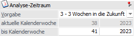
In diesem Bereich wird der Analyse-Zeitraum definiert, wobei alle Einstellungen mandantenspezifisch gespeichert werden.
Ø Vorgabe
An dieser Stelle kann der Analyse-Zeitraum vorgeben werden. Bei einer Auswahl ungleich "0 - keine Vorgabe" wird das Eingabefeld "bis Kalenderwoche" automatisch mit der hier gewählten Zukunftskalenderwoche (maximal 8 Wochen in die Zukunft) versehen.
Ø aktuelle Kalenderwoche
In diesem Feld wird die aktuelle Kalenderwoche / das aktuell Jahr (abhängig vom Einlogdatum) angezeigt.
Ø bis Kalenderwoche
In diesen Feldern kann die Woche / das Jahr eingegeben werden, bis zu dem die Werte berechnet und ausgegeben werden sollen. Hierbei können maximal 104 Wochen - also 2 Jahre - berücksichtigt werden. Falls die letzte Ausgabe im Vorjahr erfolgt ist und daher die "bis Kalenderwoche" kleiner als die aktuelle KW ist, wird die "bis Kalenderwoche" mit der aktuellen KW vorbesetzt.
Hinweis
Wenn in dem Feld "Vorgabe" eine Einstellung ungleich "0 - keine Vorgabe" gewählt wurde, so wird die Kalenderwoche / das Jahr automatisch vorbelegt (ein Überschreiben der Vorgabe ist möglich).
WinLine FIBU
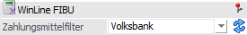
Ø Zahlungsmittelfilter
Mit Hilfe eines Filters, welche an dieser Stelle ausgewählt / erstellt / bearbeitet werden kann (siehe auch Button "Filter bearbeiten"), können die Zahlungsmittelkonten nach frei definierbaren Kriterien eingeschränkt werden.
Achtung
Wenn im Aufbau der Liquiditätsanalyse Filter vorhanden sind, auf welche man kein Zugriffsrecht besitzt, so werden diese farblich gekennzeichnet. Solche Filter werden bei der Berechnung nicht berücksichtigt!
Ø Filter bearbeiten
Durch Anwahl des Buttons können neue Filter angelegt und bestehende Filter bearbeitet werden. Hierbei stehen Filterkriterien aus dem Bereich "Kontenstamm" zur Verfügung.
WinLine FAKT
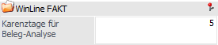
Ø Karenztage für Beleg-Analyse
Hier kann die Anzahl der Tage eingegeben werden, die normalerweise zwischen Erstellung eines Beleges und der Folgestufe vergehen. Diese Option wird mandantenspezifisch gespeichert und bei allen 4 Belegstufen wie folgt berücksichtigt:
ü bei Kundenlieferscheinen werden die Karenztage zum Lieferscheindatum dazugezählt
ü bei Kundenaufträgen werden die Karenztage zum voraussichtlichem Lieferdatum der Belegzeilen dazugezählt
ü bei Lieferantenlieferscheinen werden die Karenztage zum Lieferscheindatum dazugezählt
ü bei Lieferantenbestellungen werden die Karenztage zum voraussichtlichem Lieferdatum der Belegzeilen dazugezählt
BI-Ausgabe
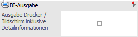
Ø Ausgabe Drucker / Bildschirm inklusive Detailinformationen
Durch Aktivierung dieser Option werden bei einer Ausgabe am Bildschirm bzw. auf den Drucker neben der Summe der zu analysierenden Daten auch die zugehörigen Belege oder Offenen Posten ausgegeben. Ob eine detaillierte Ausgabe gewünscht ist oder nicht wird benutzerspezifisch gespeichert.
Liquiditätsplandatei
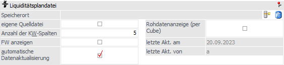
In diesem Bereich kann die Ausgabe der Liquiditätsplandatei parametrisiert werden. Die Einstellungen werden benutzerspezifisch gespeichert.
Ø Speicherort
An dieser Stelle kann mit Hilfe der folgenden Buttons der Speicherort der Liquiditätsplandatei angegeben bzw. entfernt werden. Wurde kein Ort definiert, so wird automatisch die Datei "LA.xlsm" aus dem aktuellen WinLine-Verzeichnis genutzt.
ü - Speicherort auswählen
Mit Hilfe dieses
Buttons kann jene Datei angegeben werden, welche bei Anwahl des Buttons "Ausgabe
Liquiditätsplandatei" automatisch geöffnet werden soll. Im Auslieferungsumfang
sind hierfür die Dateien "LA.xlsm", "LA_KoV.xlsm" und "LA_KmV.xlsm"
vorgesehen.
ü - Speicherort entfernen
Durch Anwahl
dieses Buttons wird der Speicherort entfernt.
Hinweis
Folgende Liquiditätsplandateien stehen im WinLine-Verzeichnisses zur Verfügung:
ü LA.xlsm
Die Liquiditätsdaten
werden komprimiert in Form einer XLSM-Datei dargestellt, wobei Kreditoren-Werte
automatisch abgezogen werden (d.h. es ist kein Vorzeichenwechsel notwendig). Im
Bereich des Budgets stehen lediglich jene Daten zur Verfügung, welche über
bzw.-für das Sachkonto "3520" budgetiert wurden.
ü LA_KoV.xlsm
Die
Liquiditätsdaten werden komprimiert in Form einer XLSM-Datei dargestellt, wobei
Kreditoren-Werte automatisch abgezogen werden (d.h. es ist kein
Vorzeichenwechsel notwendig). Im Bereich des Budgets werden alle Budget-Zeilen
berücksichtigt, wobei innerhalb der Liquiditätsplandatei entschieden werden
kann, ob die Werte addiert oder subtrahiert werden sollen.
ü LA_KmV.xlsm
Die
Liquiditätsdaten werden komprimiert in Form einer XLSM-Datei dargestellt, wobei
Kreditoren-Werte automatisch NICHT abgezogen werden (d.h. es ist ein
Vorzeichenwechsel notwendig!). Im Bereich des Budgets werden alle Budget-Zeilen
berücksichtigt, wobei innerhalb der Liquiditätsplandatei entschieden werden
kann, ob die Werte addiert oder subtrahiert werden sollen.
Ø Eigene Quelldatei
Diese Option steht nur zur Verfügung, wenn ein Speicherort definiert wurde. Wird die Option aktiviert, so wird zunächst eine Meldung angezeigt:
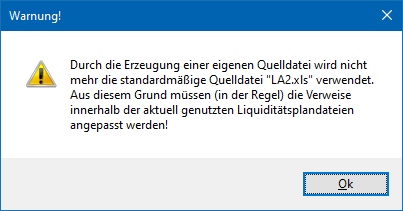
Das bedeutet, dass die Quelldaten in eine eigene Datei geschrieben werden. Dabei wird der Dateiname aus dem Speicherort um "_Q" erweitert, die Datei bekommt dann die Erweiterung "XLSM".
Beispiel
Im Speicherort wird die Datei "LA_KoV.xlsm" eingetragen. Die Quelldaten werden dann in die Datei "LA_KoV_Q.xlsm" abgestellt.
Hinweis
Wenn eine eigene Quelldatei verwendet wird, muss die Liquiditätsplandatei entsprechend angepasst werden, damit die Daten richtig dargestellt werden können.
Ø Anzahl der KW-Spalten
Hier kann die Anzahl der Kalenderwochen-Spalten für die Ausgabe der Liquiditätsplandatei angegeben werden, wobei die Anzahl aufgrund des zu analysierenden Zeitraum vorgeschlagen wird und die Maximalanzahl 104 beträgt.
Sollten die Kalenderwochen der Analyse den hier hinterlegten Wert überschreiten, so werden bei der Aufbereitung der Liquiditätsplandatei mehrere Analyseblöcke gebildet.
Beispiel
Man befindet sich in der Kalenderwoche 20. Nun sollen die nächsten 20 Kalenderwochen ausgewertet werden. Wird die Anzahl der KW-Spalten manuell auf 5 gestellt, so wird der Block der Definitionszeilen 4 mal mit je 5 Spalten ausgegeben. Wird die Anzahl der KW-Spalten hingegen auf 10 geändert, dann wird der Block der Definitionszeilen nur 2 Mal ausgegeben.
Achtung
Bei Nutzung der Excel-Datei "LA_KoV.xlsm" bzw. "LA_KmV.xlsm" müssen die Werte in einem Block vorhanden sein, d.h. der Vorschlag der KW-Spalten darf nicht unterschritten werden.
Ø FW anzeigen
Grundsätzlich erfolgt die Ausgabe immer in Landeswährung. Sollten auch Fremdwährungsinformationen gewünscht sein, so kann dieses für die Liquiditätsaufbereitung aktiviert werden, wodurch - sofern vorhanden - für die Bewegungsdaten (Belege und Offene Posten) die Fremdwährungen mit aufgeführt werden. Dabei wird in der ersten Zeile immer der Landeswährungsbetrag angeführt, in den nachfolgenden Zeilen werden dann die einzelnen Fremdwährungen angeführt.
Hinweis
In den Liquiditätsplandateien ("LA.xlsm", "LA_KoV.xlsm" und "LA_KmV.xlsm") werden Fremdwährungsinformationen standardmäßig nicht berücksichtigt, d.h. es müsste eine Erweiterung vorgenommen werden.
Ø automatische Datenaktualisierung
Bei Anwahl des Buttons "Aufbereitung Liquiditätsplandatei" werden im Standard die zuletzt berechneten Daten (siehe Buttons "Berechnen") für eine Ausgabe aufbereitet. Sollten immer aktuelle Daten gewünscht sein, so kann dieses durch Aktivierung der Option "automatisch Datenaktualisierung" gewährleistet werden, d.h. vor einer Aufbereitung wird automatisch eine Berechnung durchgeführt
Hinweis
Durch Aktivierung dieser Option wird der Button "Berechnen" deaktiviert, da immer eine Berechnung stattfindet. Des Weiteren steht die Option "Rohdatenanzeige (per Cube)" zur Verfügung.
Ø Rohdatenanzeige (per Cube)
Die Option "Rohdatenanzeige (per Cube)" bewirkt eine automatische Anzeige der Rohdaten in Form eines Cubes, sobald der Button "Aufbereitung Liquiditätsplandatei" gedrückt wurde.
Hinweis
Die Option steht nur zur Verfügung, wenn zuvor die Einstellung "automatische Datenaktualisierung" aktiviert wurde.
Ø letzte Akt. am / letzte Akt. von
In diesen Feldern wird angezeigt, wann und wer zuletzt die Berechnung für die Liquiditätsplandatei durchgeführt hat.
Info - Liquiditätsaufbau
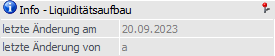
Ø letzte Änderung am / letzte Änderung von
In diesen Feldern wird das Datum bzw. das Login des Benutzers ausgewiesen, welcher zuletzt den Liquiditätsaufbau gespeichert hat.
Buttons
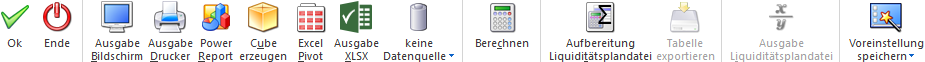
Ø Ok
Durch Drücken des Buttons "Ok" bzw. der Taste F5 werden alle mandantenspezifisch Einstellungen (Tabelle "Daten der Analyse", Bereich "Analyse-Zeitraum", "WinLine FIBU" und "WinLine FAKT") gespeichert und das Fenster geschlossen.
Hinweis
Die Einstellungen werden pro Stammdatenjahr gespeichert. D.h. wenn ein Jahresabschluss ohne Übernahme der Stammdaten erfolgt, haben beide Wirtschaftsjahre die gleichen Einstellungen.
Ø Ende
Mit Hilfe des Buttons "Ende" bzw. der Taste ESC wird abhängig vom aktuellen Fensterinhalt folgende Aktion ausgeführt:
ü Aufbau der
Liquiditätsanalyse
Das Fenster wird geschlossen und alle nicht gespeicherten
Eingaben verworfen.
ü Aufbereitung
Liquiditätsplandatei
Die Aufbereitung wird geschlossen, d.h. es wird wieder
der Aufbau der Liquiditätsanalyse angezeigt.
Ø Ausgabe Bildschirm
Mit Hilfe des Buttons "Ausgabe Bildschirm" oder der Taste F5 wird die Analyse am Bildschirm ausgegeben.
Ø Ausgabe Drucker
Durch Anwahl des Buttons "Ausgabe Drucker" wird die Analyse am Drucker ausgegeben.
Ø Power Report
Durch Drücken des Buttons "Power Report" wird die Liquiditätsanalyse auf Basis von Cube-Daten grafisch dargestellt. Die Ausgabe ist individuell anpassbar und erfolgt in der Form von "Widgets", die unterschiedlichste Darstellungen ermöglichen.
Ø Cube erzeugen
Wenn die Option "Cube erzeugen" gewählt wird, dann wird die Liquiditätsanalyse im "Olap Viewer" angezeigt. In diesem können die Daten nach verschiedenen Gesichtspunkten ausgewertet werden.
Hinweis
Bei der Ausgabe sind folgende Punkte zu beachten:
ü Dimension "Artikel"
Diese
Dimension wird nur mit einem Inhalt versehen, wenn es sich um einen Analysewert
des Typs "2 - nicht gelieferte Kundenaufträge" oder "5 - nicht gelieferte
Lieferantenbestellungen" handelt.
ü Dimension "Belegnummer"
Diese
Dimension wird bei Zeilen des Typs "-1 - Zahlungsmittelkonten", sowie den
Budgetwerten (Ausnahme "Zusatzbudget"), nicht mit einem Inhalt versehen.
Ø Excel Pivot
Durch Anwahl des Buttons "Excel Pivot" werden die Wert der Liquiditätsanalyse in Form einer Pivot Ausgabe in Microsoft Excel (2007 oder höher) angezeigt.
Ø Ausgabe XLSX
Mit Hilfe des Buttons "Ausgabe XLSX" werden die Wert der Analyse an Microsoft Excel übergeben.
Ø Datenquelle
Mit Hilfe dieser Auswahl kann definiert werden, ob und wie eine Datenquelle (d.h. ein Snapshot oder eine MasterView) verwendet werden soll.
ü Keine Datenquelle
Bei Auswahl
von "keine Datenquelle" wird keine zuvor angelegte Datenquelle genutzt. D.h. die
Daten werden von der WinLine "live" ermittelt und in der gewünschten Form
ausgegeben.
Hinweis
Da die BI-Ausgabe (z.B. Cube oder Power Report) immer eine Datenquelle benötigt, wird im Hintergrund eine temporäre Datenquelle (Snapshot) gebildet.
ü Datenquelle
erstellen/aktualisieren
Die Daten werden zur Laufzeit ermittelt und an einen
zu definierenden Snapshot übergeben. Nach dem Füllen der Datenquelle wird die
gewünschte Ausgabevariante über die Datenquelle erzeugt. Dieser Vorgang kann mit
einer Zeitverzögerung verbunden sein, da die Daten zusätzlich gespeichert werden
müssen.
ü Datenquelle verwenden
Bei der
Verwendung eines Snapshots werden die Daten direkt aus der Datenquelle gelesen,
d.h. die für die Ausgabe benötigten Daten können ohne Verzögerung in der
gewünschten Variante ausgegeben werden.
Wird hingegen eine MasterView
gewählt, so werden die Daten für die Ausgabe "live" ermittelt, wobei diese so
aktuell sind wie die zugrunde liegenden Datenquellen.
Hinweis
Der Button "Datenquelle verwenden" wird nur angeboten, wenn für diesen Bereich (bezogen auf den aktuellen Benutzer / Mandanten) zumindest eine private oder öffentliche Datenquelle existiert. Des Weiteren stehen die Ausgabevarianten "Ausgabe Bildschirm", "Ausgabe Drucker" und "Aufbereitung Liquiditätsplandatei" bzw. "Ausgabe Liquiditätsplandatei" nicht zur Verfügung.
Hinweis
Weitere Informationen zum Thema "Datenquellen" entnehmen Sie bitte dem Die Datenquelle.
Ø Berechnen
Durch Anklicken des Buttons "Berechnen" werden die Daten für die Liquiditätsplandatei aufbereitet, d.h. es findet eine Berechnung der Einzelwerte statt, welche im Anschluss auf Kalenderwochen verdichtet werden. Sollte die Option "automatische Datenaktualisierung" aktiviert worden sein, so steht der Button nicht zur Verfügung, da immer eine Berechnung stattfindet.
Ø Aufbereitung Liquiditätsplandatei
Durch Anklicken des Buttons "Aufbereitung Liquiditätsplandatei" werden die Daten der Analyse, gemäß den gewählten Einstellungen, in Tabellenform dargestellt. Die hierbei genutzten Daten stammen immer aus der letzten Berechnung (Button "Berechnen" oder Nutzung einer BI-Ausgabe), wobei die Aktualität den Einträgen "letzte Akt. am / letzte Akt. von" entnommen werden kann.
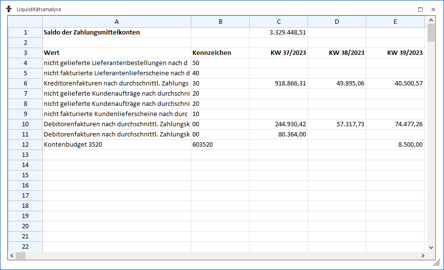
In der ersten Zeile der Auswertung wird der aktuelle Saldo der Zahlungsmittelkonten angezeigt. Hierbei wird der Saldo aller Konten verwendet, bei denen der Kontentyp auf "Zahlungsmittelkonto" gestellt ist. Eine weitere Einschränkung ist per Zahlungsmittelfilter möglich.
Darunter werden dann die Einträge gemäß dem Aufbau der Liquidität ausgewiesen, wobei in den Zeilen die Definitionen und in den Spalten die Werte / Kalenderwoche ausgegeben werden. In der ersten Kalenderwoche werden alle überfälligen Datensätze zusammengefasst und angezeigt.
Vor der ersten Spalte "Kalenderwoche" wird die Spalte "Kennzeichen" angezeigt. Aus dieser wird ersichtlich welcher Wert (mit welcher Berechnungsbasis) in dieser Zeile enthalten ist. Der Wert setzt sich wie folgt zusammen:
ü 1. Stelle = Wert
Dieses ist die
Einstellung, welche in der Spalte "Wert" des Aufbaus der Liquidität definiert
wurden.
ü 2. Stelle = Bewertung
Hier wird
angezeigt, nach welcher Bewertungsmethode die Berechnung erfolgt (Spalte
"Bewertung" im Liquiditätsaufbau). Wenn die erste Stelle 6, 7 oder 8 lautet,
dann ist die zweite Stelle immer 0.
ü Ab 3. Stelle =
Stammdatensatz
Die Kennzahl ist nur dann mehr wie 2 Stellen lang, wenn an der
ersten Stelle 6, 7 oder 8 steht. Dann wird nämlich ab der 3. Stelle die
Kontonummer, die BKZ oder die BWA angezeigt, welche im Aufbau angegeben
wurde.
ü Sonderfall
"Fremdwährungen"
Wenn in der Liquiditätsanalyse die Option "FW anzeigen"
aktiviert wurde, dann wird vor dem Kennzeichen das Kürzel der Fremdwährung
vorangestellt (z.B. CHF20).
Ø Tabelle exportieren
Dieser Button steht nur zur Verfügung, wenn man sich im Bereich der Aufbereitung der Liquiditätsplandatei befindet und bewirkt die Speicherung der Tabelle als XLS-Datei (Excel-Format) in einem anzugebenden Verzeichnis.
Ø Ausgabe Liquiditätsplandatei
Dieser Button steht nur zur Verfügung, wenn man sich im Bereich der Aufbereitung der Liquiditätsplandatei befindet. Nach Anwahl werden folgende Funktionen ausgeführt:
ü Erstellung der Datei
"LA2.xlsx"
In der Datei "LA2.xlsx" sind jene Werte zu finden, welche aktuelle
am Bildschirm zu sehen sind. Der Speicherort der Datei ist immer das
WinLine-Verzeichnis des Arbeitsplatzes.
ü Öffnen der
Liquiditätsplandatei
Nach der Erstellung der "LA2.xlsx"-Datei (Daten der
Analyse) wird die Liquiditätsplandatei geöffnet, wobei der Speicherort der Datei
im Feld "Speicherort" definiert werden kann (wurde kein Ort definiert, so wird
automatisch die Datei "LA.xlsm" aus dem aktuellen WinLine-Verzeichnis genutzt).
Diese Datei greift inhaltlich im Standard auf die Datei "LA2.xlsx" zu.
Beispiel - Liquiditätsplandatei "LA.xlsm"
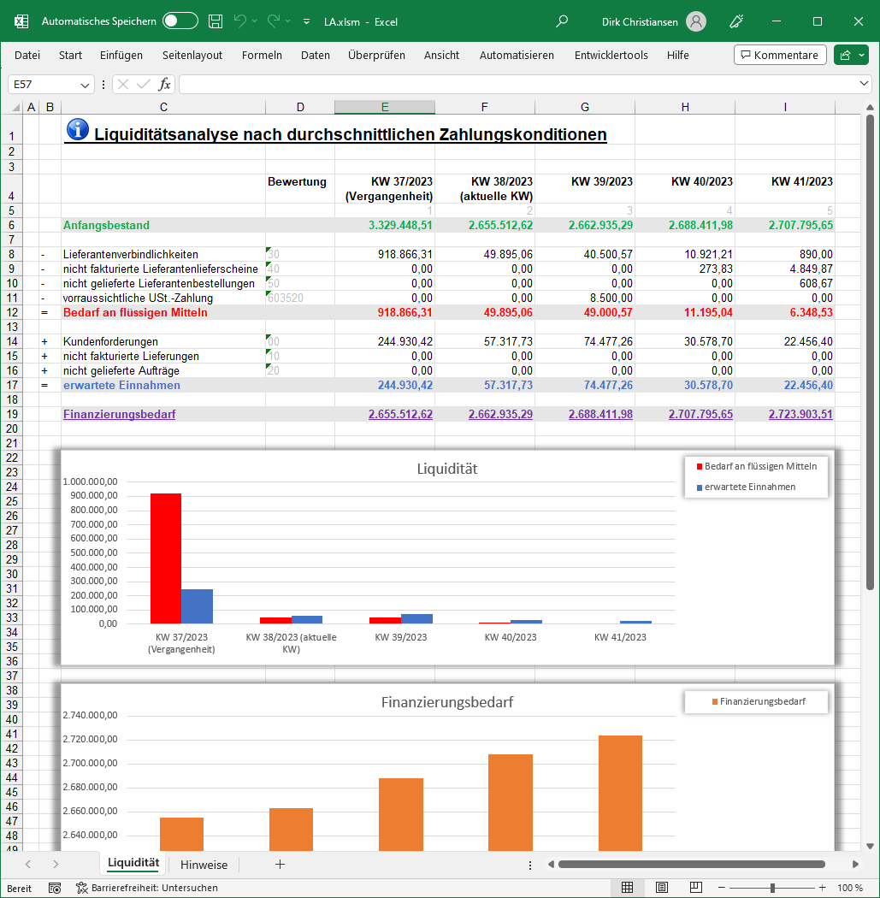
Beispiel - Liquiditätsplandatei "LA_KoV.xlsm"
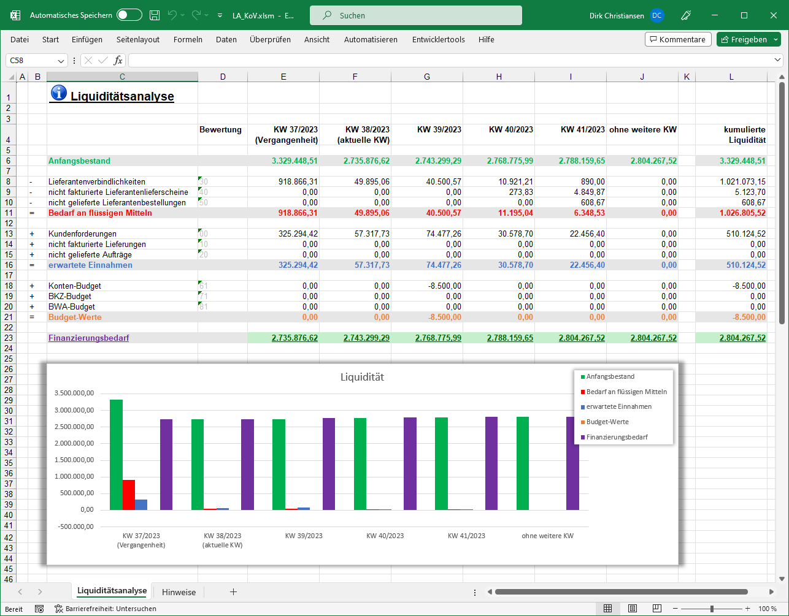
Ø Voreinstellung speichern
Durch Anwahl dieses Buttons erfolgt eine benutzerspezifische Speicherung aller im Fenster getätigten Einstellungen. Diese sogenannten "Voreinstellungen" können jederzeit wieder abgerufen werden und ermöglichen dadurch ein schnelleres und zielorientierteres Arbeiten (nähere Informationen entnehmen Sie bitte dem Kapitel "Die Voreinstellungen").